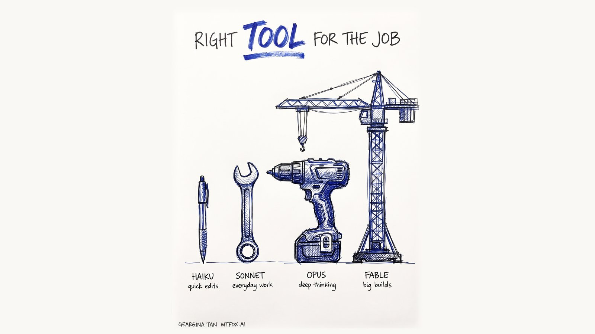

Which Claude Model Should I Use? Haiku vs Sonnet vs Opus vs Fable
A plain-English guide to the 4 Claude models for business teams. What each one is for, who gets it on which plan, and the effort setting most people never touch. Updated Oct 2026.

Use Sonnet 5.5 for most of your day, and switch to Opus 5.5 when the work is hard or the stakes are high.
Keep Haiku 5.5 for quick small jobs, and save Fable 5.1 for big builds that run for a long time.
That's the short answer. The rest of this post is for the people who open the model menu, see four names, and quietly pick the biggest one "just in case".
I posted a version of this on LinkedIn in July and it travelled further than I expected. A lot has changed since then. Every model got a new version, Haiku is suddenly very good, and the thinking toggle mostly doesn't exist anymore. So here's the updated version, written for business teams, not developers.
What are the four Claude models?
Anthropic, the company behind Claude, names its models like a ladder. Small to big, fast to slow.
Haiku 5.5 is the fastest and lightest. It came out in early Oct and it's a big jump from the old Haiku. Great for quick, small jobs where you want the answer now.
Sonnet 5.5 is the all-rounder. Anthropic describes it as the best combination of speed and intelligence. This is the one I tell most people to live in.
Opus 5.5 is the deep thinker. Built for long, multi-step work like digging through a big report or building something properly. It's also cheaper to run than the Opus before it, which changed my opinion of it.
Fable 5.1 is the most capable model Anthropic sells to everyone. It's also the slowest and the most expensive, and on Max it eats your usage limit fastest.
Claude Haiku vs Sonnet vs Opus vs Fable: quick comparison
| Model | Speed | Use it for | Who gets it in the Claude app |
|---|---|---|---|
| Haiku 5.5 | Fastest | Quick edits, short summaries, sorting and tagging | Every plan, including Free |
| Sonnet 5.5 | Fast | Everyday writing, planning, reading documents | Every plan, including Free |
| Opus 5.5 | Moderate | Hard problems, long reports, careful analysis | Paid plans (Pro, Max, Team, Enterprise) |
| Fable 5.1 | Slower | Big end-to-end builds and long research | Max and premium Team seats get it inside their limits. Pro and standard Team seats pay extra through usage credits |
Prices as of Oct 2026, before tax. Pro is US$20 a month, or US$17 a month if you pay yearly. Max starts at US$100 a month. A Team standard seat is US$25 a month, or US$20 if you pay yearly.
Which Claude model for which job?
Most teams I train in Singapore aren't writing code. They're in HR, sales, finance, ops. So let me put it in those terms.
Admin and ops. Rewording a message to a supplier or cleaning up meeting notes. Haiku handles this fine and it's almost instant. If the notes are messy and long, move up to Sonnet.
Sales and marketing. Drafting a LinkedIn post or reworking a proposal for a new client. Sonnet. It writes well and you won't burn through your limit by lunchtime.
HR. First drafts of a job description or a policy summary for staff. Sonnet again. When it's something sensitive, like a restructuring announcement or a tricky performance conversation, I'd switch to Opus and ask it to poke holes in the draft.
Finance. Making sense of a 60-page annual report, or comparing three vendor quotes. Opus. When the numbers matter, I want the model that slows down and checks its work.
The boss or the founder. Thinking through a big decision, stress-testing a plan before the board sees it. Opus for most of this. Fable when the job is long and has many moving parts, like building a full internal tool or researching a new market end to end.
Start on Sonnet. Move up when the answer disappoints you, not before.
How I split them in my own work
I run my whole working week out of Claude. Calendar, inbox, client follow-ups, LinkedIn drafts, even this post started there. My setup has a name, Friday, after the AI in Iron Man.
And I don't use one model for everything. Back in July I told Friday "use Sonnet for simple tasks", and that became the rule.
So today it looks like this. Fable does the planning and the final check before anything goes to a client, because a mistake there costs me more than the extra usage. Opus 5.5 does the heavy building, like a long workshop deck or a page on my website. Sonnet does the small mechanical stuff, like formatting a table or pulling a file.
The surprise for me was Opus 5.5. I used to treat Opus as the expensive middle child. Now Anthropic's own developer guide says most work should start with Opus 5.5, and it costs less to run than Opus 5 did. For anyone on a paid plan, it's earned a spot as your "this one matters" model.
I still wouldn't make it your default for everything though. On a Pro plan your usage is shared across every chat, and the bigger models use it up faster. Sonnet for most of it, Opus when it counts.
What about effort and thinking?
Next to the model name there's a second setting most people never touch. It's called effort.
Effort is how hard Claude works before it answers. Picture a student in an exam. Low effort answers straight off the top of the head, fine for easy questions. High effort slows down and checks its work.
Anthropic's own advice is simple. Low and Medium are good for routine tasks and stretch your usage further. High is the best balance. Extra high and Max are for long, difficult work, and they take longer.
Each model has its own default, marked in the menu. Leave it there unless you have a reason not to.
Thinking has changed since July. On the newest models (Haiku 5.5, Sonnet 5.5, Opus 5.5 and Fable 5.1) you can't switch thinking off in the Claude app. It's always on, and effort is now the dial you actually control. So if an answer feels shallow, try raising effort before you jump to a bigger model. And write a clear prompt. A vague question gets a vague answer on any model. These five prompts I use every week are a good place to start.
A note if your team builds with Claude
Everything above is about the Claude app. If someone on your team plugs Claude into your own systems through the API, model choice becomes a cost question too, because you pay per use.
Haiku 5.5 is very cheap for that kind of work. Think sorting thousands of customer enquiries or pulling fields out of forms. If you're not sure what an API even is, I wrote an explainer on API vs MCP that skips the jargon.
The mistake I see most
People pick Fable or Opus for every single chat, hit their limit by Wednesday, and decide Claude is "too expensive".
It isn't. They're using a crane to hang a picture frame.
Match the model to the job. Your limits will last the week, and your answers will come back faster too.
If your team wants to get this right together, this is exactly what we cover in my Claude workshop in Singapore. We set up the models, the settings and the habits on your real work, not on toy examples.
FAQ
Which Claude model should I use by default?
I tell most people to use Sonnet 5.5 as their everyday default. It's fast and it's on every plan, including Free. Switch to Opus 5.5 when the task is complex or a mistake would be costly, like analysing a long report or checking an important decision. Use Haiku 5.5 for quick edits and short summaries. Keep Fable 5.1 for long, end-to-end builds.
Which Claude models are free?
On the Free plan you get Haiku 5.5 and Sonnet 5.5, which covers most everyday work. Opus 5.5 needs a paid plan such as Pro, Max, Team or Enterprise. Fable 5.1 is included within your limits on Max plans and premium Team seats. Pro users can still use Fable, but it's charged separately through usage credits at API rates.
Is Claude Fable worth paying for?
For most people, no. Fable 5.1 is Anthropic's most capable public model, but it's slower and uses your limits fastest. It's worth it for long, complex jobs like building a full tool or deep research across many sources. For everyday writing, planning and analysis, Sonnet 5.5 and Opus 5.5 do the job well and leave room in your weekly limit.
Can I switch Claude models in the middle of a chat?
Yes. Open the model menu and pick a different model or effort level at any point. The change applies from Claude's next reply, so you don't need a new chat. A good habit is drafting on Sonnet, then switching to Opus to review the final version before it goes out.
Keep reading: API vs MCP, explained simply, or what happened when 40 professionals met Claude for the first time.